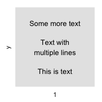
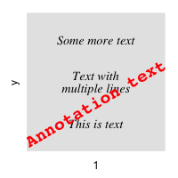
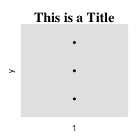
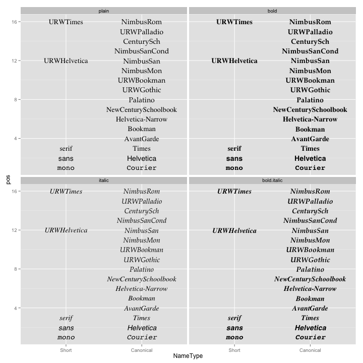
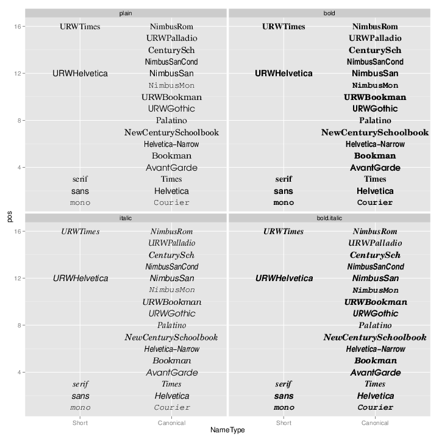

Fonts
This page was recently updated to reflect changes in the new version of ggplot2, 0.9.3. See Installing and using packages to make sure you have the latest version of ggplot2.
Problem
You want to use different fonts in your graphs.
Solution
Update: Also see the extrafont package for much better support of fonts for PDF and Windows bitmap output.
Font support in R is generally not very good. It varies between systems, and between output formats.
geom_text
With geom_text or annotate in ggplot2, you can set a number of properties of the text. geom_text is used to add text from the data frame, and annotate is used to add a single text element.
| Name | Default value |
|---|---|
size |
5 |
family |
"" (sans) |
fontface |
plain |
lineheight |
1.2 |
angle |
0 |
hjust |
0.5 |
vjust |
0.5 |
Note that size is in mm, not points.
dat <- data.frame( y = 1:3, text = c("This is text", "Text with\nmultiple lines", "Some more text") ) library(ggplot2) p <- ggplot(dat, aes(x=1, y=y)) + scale_y_continuous(limits=c(0.5, 3.5), breaks=NULL) + scale_x_continuous(breaks=NULL) p + geom_text(aes(label=text)) p + geom_text(aes(label=text), family="Times", fontface="italic", lineheight=.8) + annotate(geom="text", x=1, y=1.5, label="Annotation text", colour="red", size=7, family="Courier", fontface="bold", angle=30)
 
themes and element_text
When controlling elements such as the title, legend, axis labels, and so on, you use element_text, which has the same parameters, except that size is points (not mm), and instead of fontface, it uses face. The default value of size depends on the element; for example, titles are larger than tick labels.
p + geom_point() + ggtitle("This is a Title") + theme(plot.title=element_text(family="Times", face="bold", size=20))

Table of fonts
You can use this code to generate a graphical table of fonts. Fonts have short names and canonical family names. You can use either one when specifying the family.
fonttable <- read.table(header=TRUE, sep=",", stringsAsFactors=FALSE, text=' Short,Canonical mono,Courier sans,Helvetica serif,Times ,AvantGarde ,Bookman ,Helvetica-Narrow ,NewCenturySchoolbook ,Palatino ,URWGothic ,URWBookman ,NimbusMon URWHelvetica,NimbusSan ,NimbusSanCond ,CenturySch ,URWPalladio URWTimes,NimbusRom ') fonttable$pos <- 1:nrow(fonttable) library(reshape2) fonttable <- melt(fonttable, id.vars="pos", measure.vars=c("Short","Canonical"), variable.name="NameType", value.name="Font") # Make a table of faces. Make sure factors are ordered correctly facetable <- data.frame(Face = factor(c("plain","bold","italic","bold.italic"), levels = c("plain","bold","italic","bold.italic"))) fullfonts <- merge(fonttable, facetable) library(ggplot2) pf <- ggplot(fullfonts, aes(x=NameType, y=pos)) + geom_text(aes(label=Font, family=Font, fontface=Face)) + facet_wrap(~ Face, ncol=2) pf
What you see on the screen isn't necessarily the same as what you get when you output to PNG or PDF. To see PNG output:
png('fonttable.png', width=720, height=720, res=72) print(pf) dev.off()
Notice that on the system that generated this picture, most of the fonts (at the top) don't really work. Only the basic fonts (at the bottom) work.

And PDF output (the image below has been converted from PDF to PNG):
pdf('fonttable.pdf', width=10, height=10) print(pf) dev.off() # Convert to PNG using ImageMagick: # convert -resize 720x720 -background white fonttable.pdf fonttable-pdf.png
The PDF device has better font support than the PNG device. All the fonts work (though they're not necessarily pretty):
